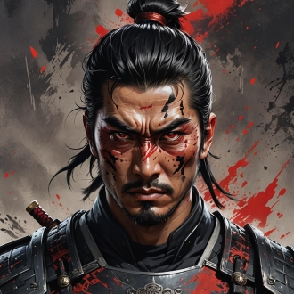

-
Akira Saito
Descrição
Akira Saito é uma samurai de elite com pele branca como a neve e olhos vermelhos ardentes. Sua armadura branca reluzente brilha sob a luz do luar, destacando-se no campo de batalha. Akira perdeu seus pais em um ataque de monstros e desde então se dedicou ao treinamento intensivo para proteger os outros. Ela é conhecida tanto por sua habilidade imbatível quanto por sua compaixão.
-
Haruto Tsukino
Descrição
Haruto é um samurai corrompido pelo poder, com cicatrizes e olhos negros misteriosos. Ele veste uma armadura preta com detalhes vermelhos. Ex-aliado de Akira, Haruto foi seduzido pelo poder das trevas e agora lidera um exército de monstros.
-
Kenji Yamamoto
Descrição
Kenji é um jovem samurai ágil com cabelo negro e olhos verdes brilhantes. Sua armadura leve permite movimentos rápidos. Amigo de infância de Akira, Kenji sempre a apoiou em sua jornada, sendo leal e corajoso.
-
Mei Ling

Descrição
Mei Ling é uma sábia samurai idosa com cabelos brancos e olhos azuis profundos. Ela veste uma armadura cerimonial dourada. Treinou Akira e Kenji, conhecendo os segredos das forças sombrias. Ex-aliado de Akira, Haruto foi seduzido pelo poder das trevas e agora lidera um exército de monstros.
-
Hana Suzuki

Descrição
Hana é uma curandeira jovem com longos cabelos castanhos e olhos dourados. Ela veste roupas leves e tem uma aura tranquilizadora. História: Aliada valiosa de Akira e Kenji, cura suas feridas e oferece suporte.
-
Isabella Ferreira
Descrição
Isabella é uma guerreira robusta com cabelo castanho escuro e olhos verdes intensos. Ela usa uma armadura com detalhes em verde e dourado, simbolizando sua origem. Isabella veio ao Japão em busca de conhecimento e para fugir de uma vida de escravidão. Tornou-se uma guardiã poderosa, respeitada por todos.
-
Gabriel
Descrição
Rafael é ágil e furtivo, com cabelos negros e olhos castanhos. Ele veste roupas escuras que facilitam suas infiltrações. Originário de uma família de assassinos no Brasil, Rafael fugiu para o Japão para escapar de um destino sombrio e encontrou um novo propósito.
-
Pedro Lima
Descrição
Pedro é um monge com cabelos raspados e olhos serenos. Ele veste roupas tradicionais de monge, adornadas com símbolos espirituais. Buscando paz e iluminação, Pedro viajou ao Japão e se tornou um monge respeitado, utilizando seu conhecimento espiritual para ajudar os necessitados.
-
Luiza Silva
Descrição
Luiza é uma arqueira talentosa com cabelos longos e castanhos e olhos azuis brilhantes. Ela usa uma armadura leve que permite agilidade. Vinda do Brasil para escapar da opressão, Luiza encontrou liberdade e propósito como arqueira no Japão, protegendo os inocentes com suas habilidades.